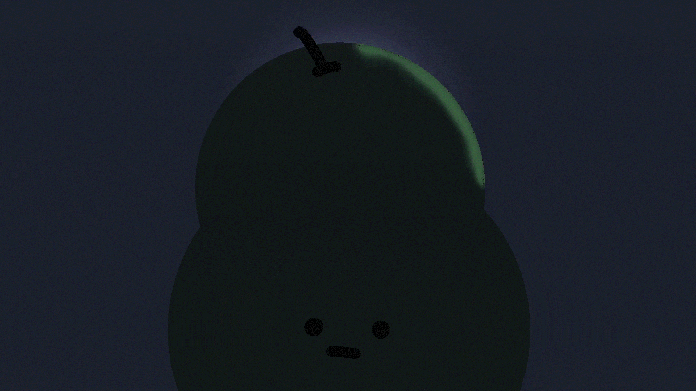
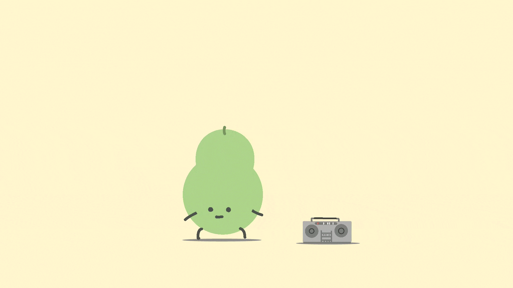
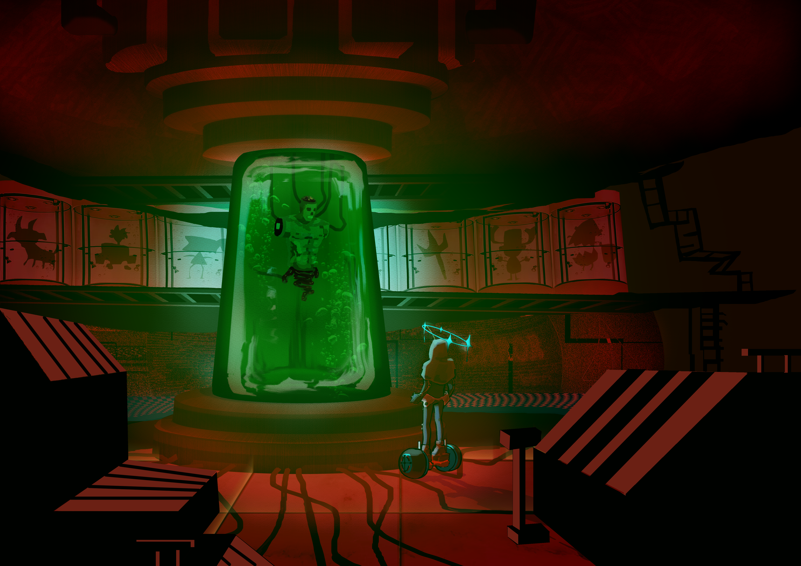
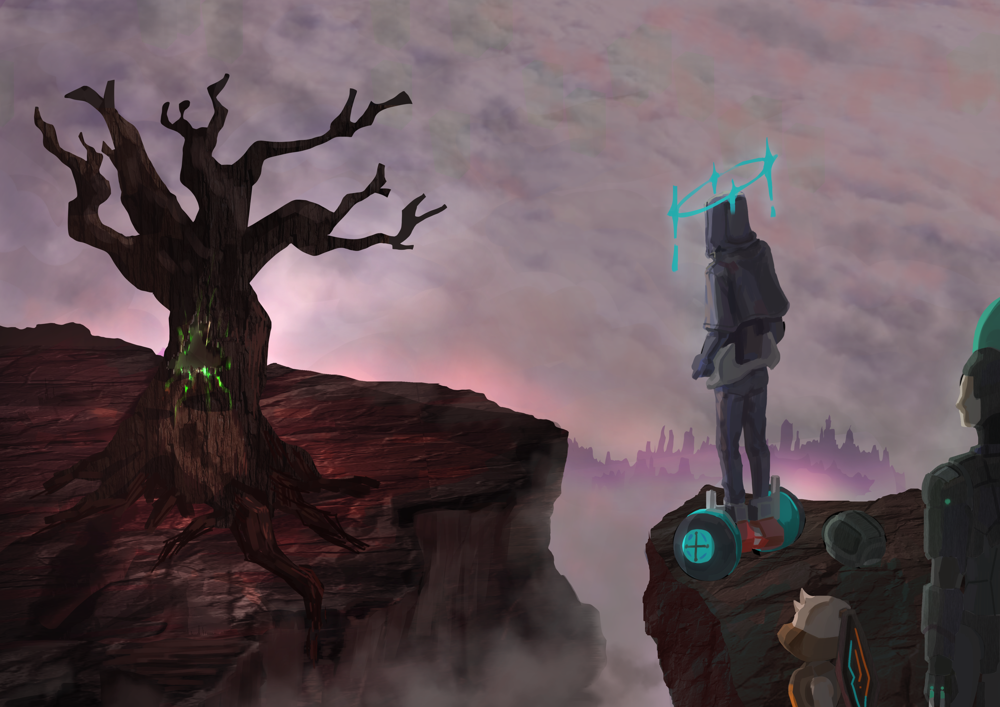
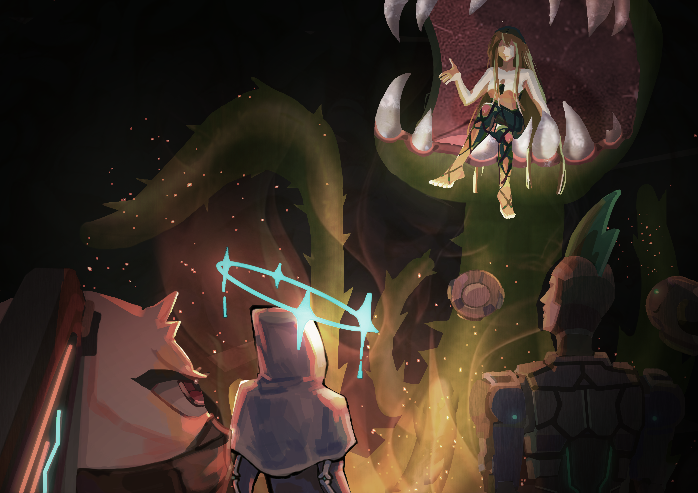

FIG. 001↗
FIG. 001↗
PORTFOLIO / TAIWANSCROLL TO EXPLORE ↓
DIGITAL MEDIA DESIGNER
VISUAL THINKER / IMAGE MAKER
NOT HERE
TO BE NEAT.
✳
我愛航海王、
非常好看，
愛的形狀。
ART / DESIGN / EXPERIMENTNO FIXED FORM. JUST IDEAS.
這裡收藏一些視覺實驗、角色、插畫與尚未安分下來的想法。
01 — SELECTED WORKS
THE
ARCHIVE.
我愛畫畫
畫畫不愛我。
FIG. 001↗
 FIG. 002↗
FIG. 002↗
 FIG. 003
↗
FIG. 003
↗
 FIG. 004↗
FIG. 004↗

FIG. 005↗
FIG. 006↗ FIG. 007↗
FIG. 007↗
 FIG. 008↗
FIG. 008↗
 FIG. 009↗
FIG. 009↗
 FIG. 010↗
FIG. 010↗

FIG. 011↗
FIG. 012↗
FIG. 013↗NO WORKS IN THIS CATEGORY YET / IN PROGRESS ↗
MORE WORKS WILL BE ADDED / IN PROGRESS ↗
A NOTE TO MYSELF / 002
MAKE IT
WEIRD.
MAKE IT ME.
DON'T POLISH THE STRANGE OUT OF IT.不必每個想法都有標準答案。
✳
02 — THE PERSON
WHO IS
611?
A LITTLE CHAOS
IN A HUMAN FORM.
STILL
FIGURING
IT OUT✳
FIGURING
IT OUT✳
嗨，我是 611。
一名數位媒體設計系學生，喜歡畫畫、角色創作、視覺敘事，也喜歡把腦袋裡那些奇怪的想法變成看得見的東西。
目前持續探索插畫、平面設計、動態影像與互動體驗。還在學習，也還在累積自己的視覺語言。
03 — GET IN TOUCH
HAVE A
STRANGE
IDEA?
如果你也喜歡不太尋常的東西，
歡迎來聊聊。
REPLACE WITH YOUR EMAIL ADDRESS